Design Systems
Context
VKUI is VK's design system. Components, tokens, usage guidelines. Open-source React library on GitHub.
Products built on VKUI: VK Messenger, VK Dobro, Mail, Cloud, Calendar by Mail.ru. Plus thousands of mini apps by third-party developers.
In 2022, Mail.ru Group became VK. Two independent systems — Paradigm and VKUI — merged into one. 120 shared tokens. React as the single technology.
My Role
Worked within the system as a product designer. Built layouts from VKUI components, used tokens to switch between platforms. Contributed to the library: proposed component improvements, fixed mismatches between Figma and code.
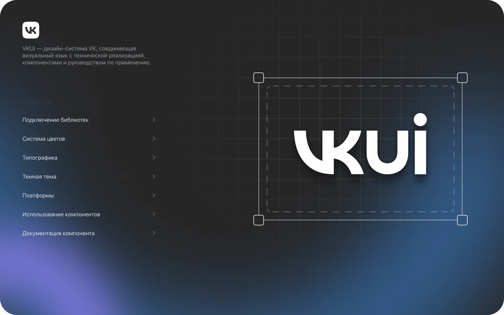
Library Architecture
Six Figma libraries. Common — shared components. iOS and Android — platform-specific variants.
Tokens Base — 3 components, 234 styles, 171 variables. Appearance Tokens — 519 styles. Icons Library — 4,150 components.
Connect the libraries you need. Choose a platform via tokens. Components adapt automatically.
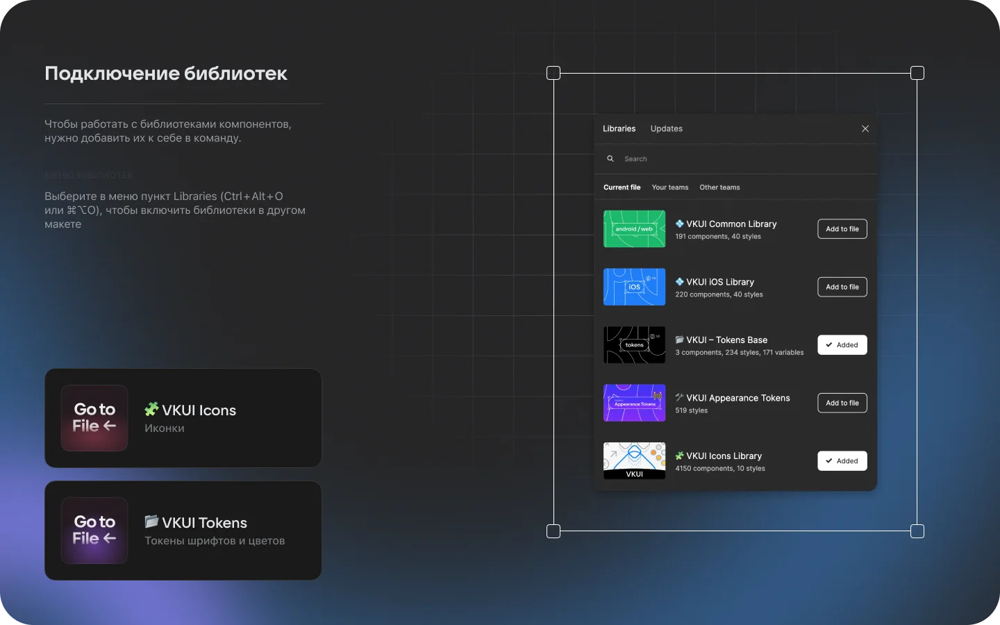
Color System
Each color in Figma maps to a developer token. Web: --vkui--color_text_accent. Android: VkTheme.colors.text.textAccent. iOS: UIColor.vkui.textAccent.
Tokens grouped by usage area, not by value. Text, icons, backgrounds, borders — separate folders.
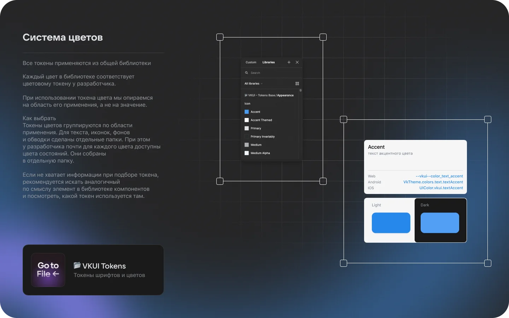
Typography
Two font families: fontFamilyAccent for headings, fontFamilyBase for body text. Three weight variants each.
Title 1 (24/28), Title 2 (20/24), Title 3 (17/22), Headline 1 (16/20), Headline 2 (15/20), Text (16/20).
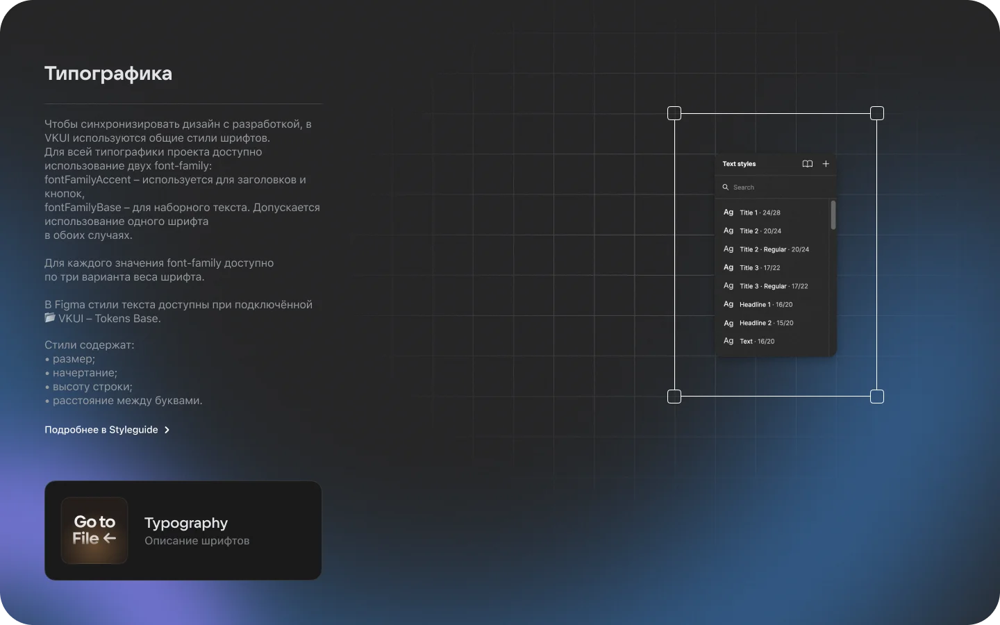
Dark Theme & Platforms
All components use color tokens. Light and dark themes switch via Appearance. One layout, two modes.
Five platforms: iOS, Android, vkCom, Desktop, Auto. Token switching rebuilds components: radii, spacing, control sizes.
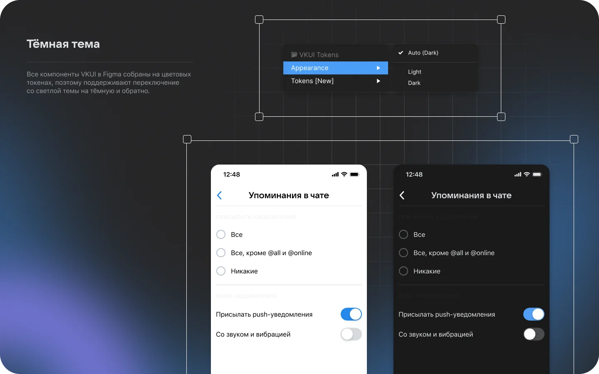
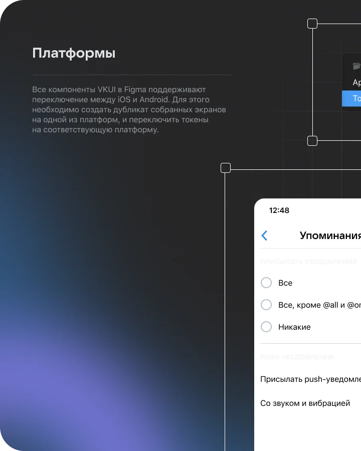
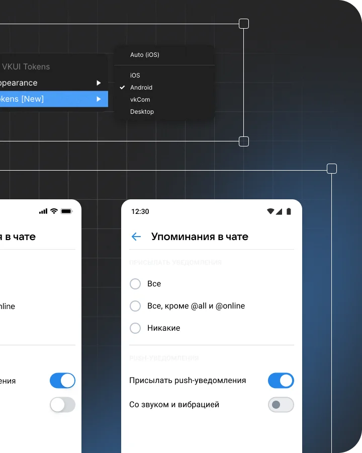
Components & Documentation
Figma components mirror code. Search via Assets, configure via parameters: Size, Mode, Appearance, Disabled, Icon.
Documentation lives next to each component. Four banner types: "Good to know," "Important," "Forbidden," "Allowed." Styleguide pages have live examples with source code.
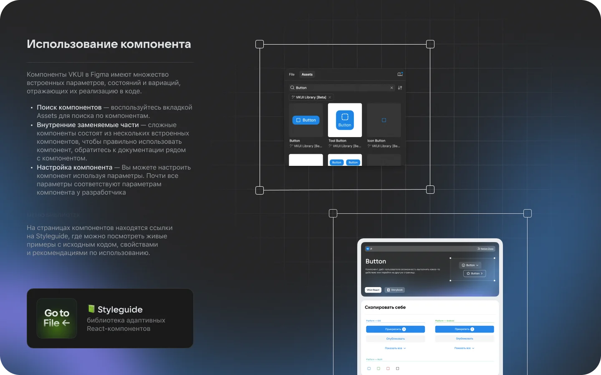
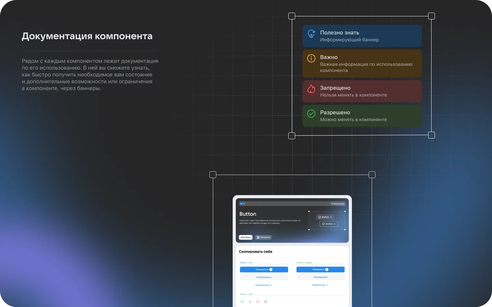
Takeaways
A design system is not a component library. It's a contract between design and development. A token in Figma = a variable in code.
One system serving hundreds of products. A token error ripples across the entire ecosystem. Documentation is not optional — it's part of the component.
The Paradigm–VKUI merger is an example of how unifying two systems is harder than building one from scratch. 120 shared tokens took months of cross-team audit.
Context
Plasma is SberDevices' design system for the Salute virtual assistant ecosystem. Every application in the ecosystem is built on Plasma.
Open-source monorepo on GitHub. TypeScript 78%, styled-components. Seven core packages: plasma-ui, plasma-web, plasma-b2c, plasma-tokens, plasma-tokens-web, plasma-tokens-b2c, plasma-icons.
My Role
Worked with Plasma as an interface designer for Salute ecosystem devices. Used tokens and components to build Canvas Apps. Studied how the system scales across devices with different interaction models.
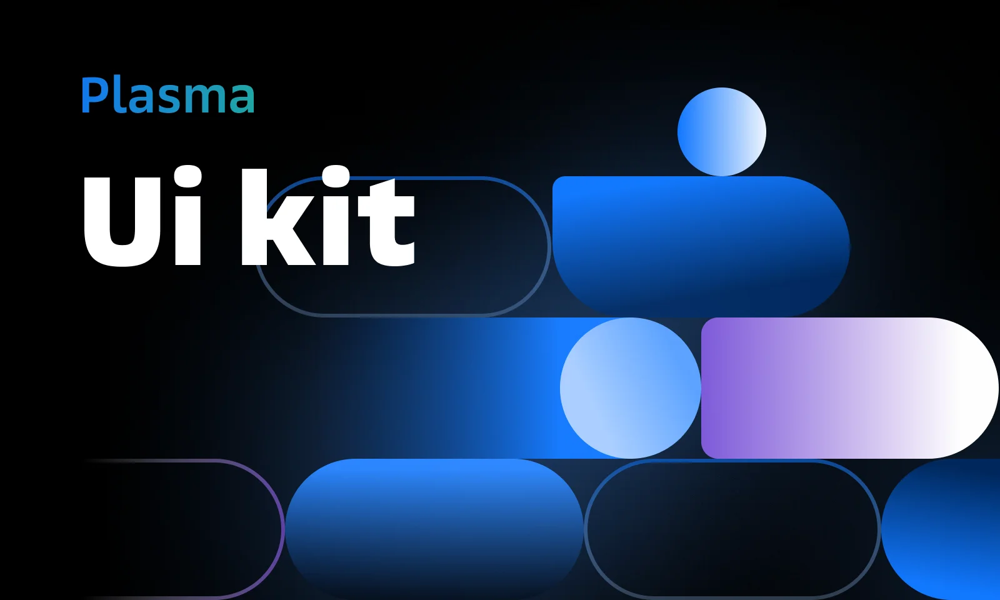
Components
Buttons, cards, controls, navigation bars — all in the Figma library. Each component scales through tokens across three breakpoints.
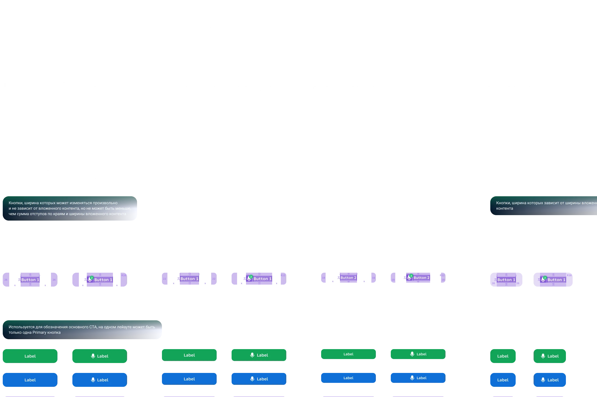
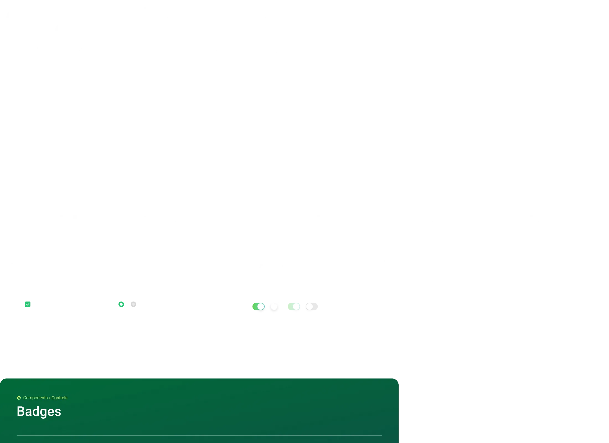
Tokens & Responsiveness
CSS variables prefixed with --plasma-*. Colors, typography, spacing, shadows, radii.
Color tokens: surfaces, text, buttons, overlays. States: hover, active, focus. Semantic: accent, success, warning, critical, info.
Three breakpoints: mobile (up to 559px), tablet (560–959px), desktop (960px+). Tokens scale through media queries.
Package Architecture
plasma-core — single source of truth for values. plasma-ui — components for devices (SberBox, SberPortal). plasma-web — web applications. plasma-b2c — B2C adaptation.
Separate token packages per environment. Storybook for each package. Documentation at plasma.sberdevices.ru.
Typography
SB Sans Text, SB Sans Cond Mono, SB Sans Text Mono. Unified typographic scale across the ecosystem — text looks the same on SberBox, tablet, and browser.
React components replace standard HTML tags. Instead of h1 — a component with sizing from tokens.
Takeaways
Plasma runs on voice-controlled devices. SberBox — a TV. SberPortal — a desk screen. Web — a standard browser. Three interaction models, one component system.
A monorepo with seven packages demands discipline. A change in core requires validation across all dependents.
Here I saw how a design system scales beyond the screen. Voice interfaces, devices without keyboards. Tokens work everywhere — if the architecture is sound.